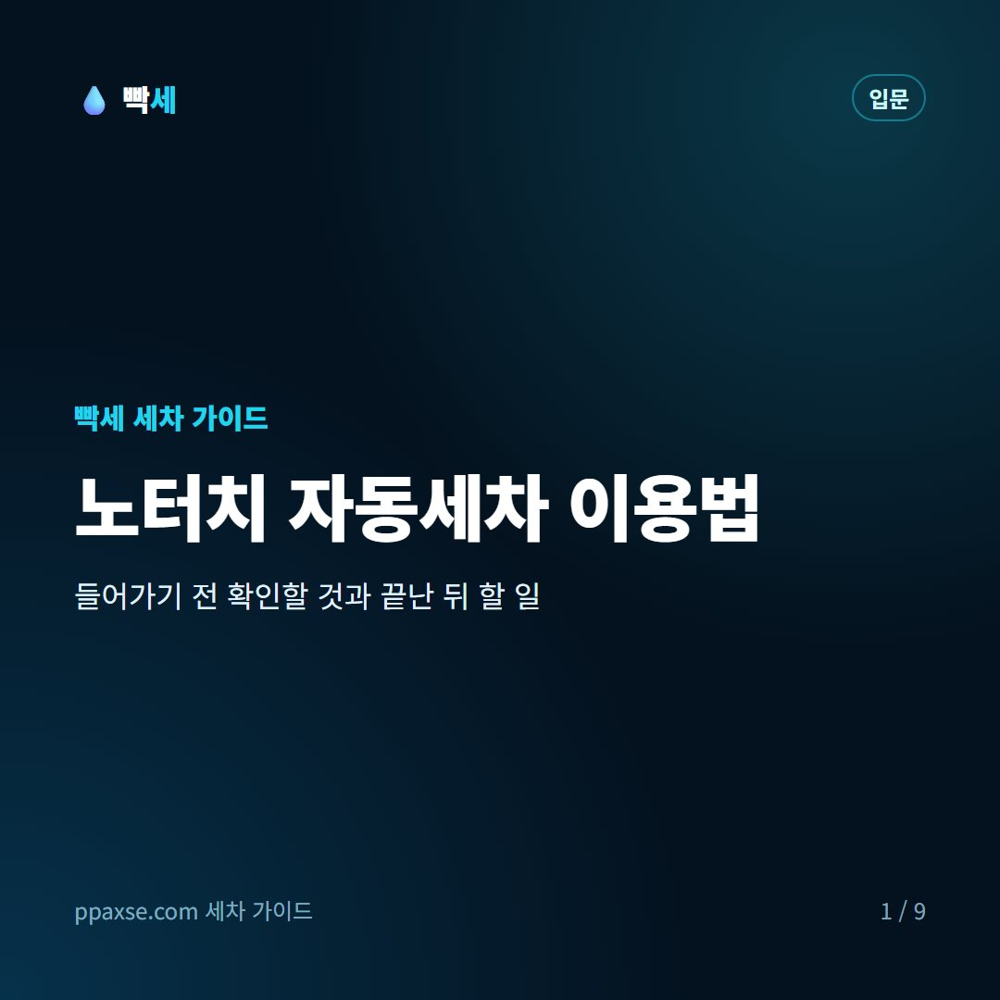
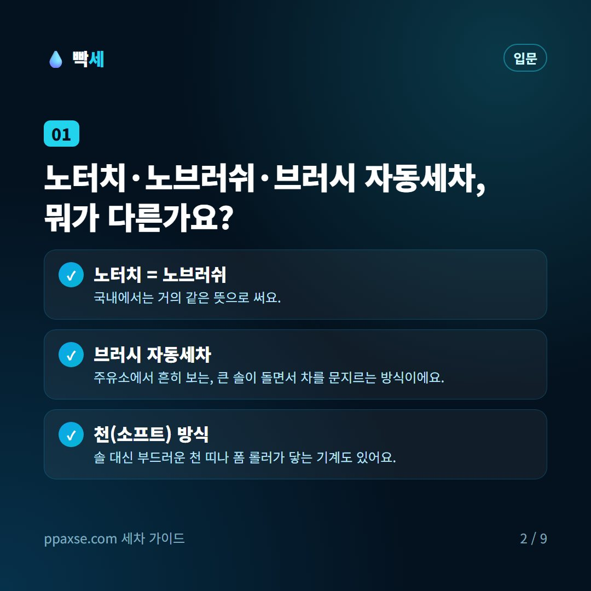
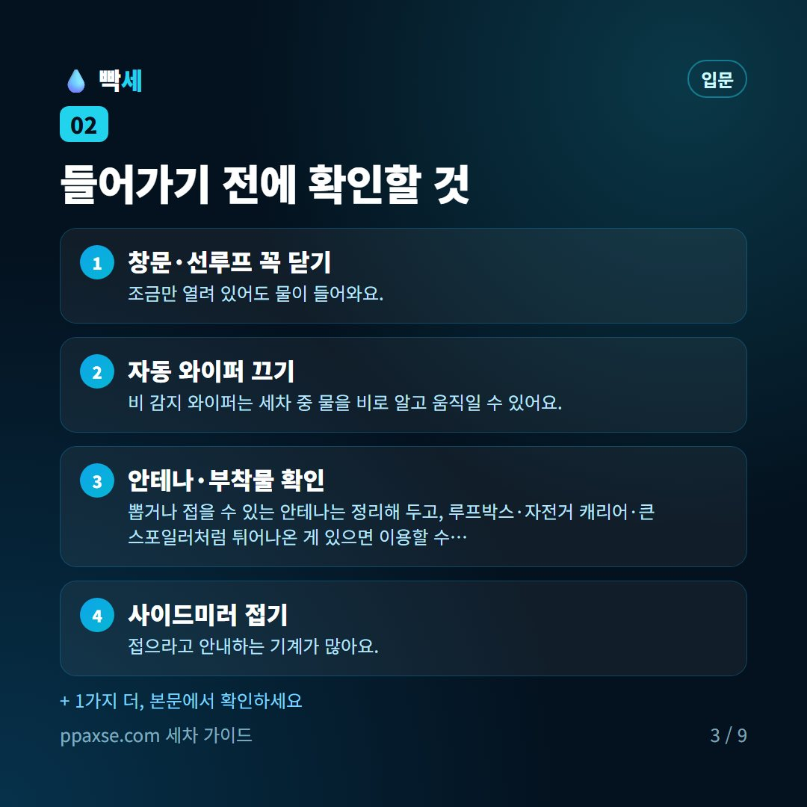
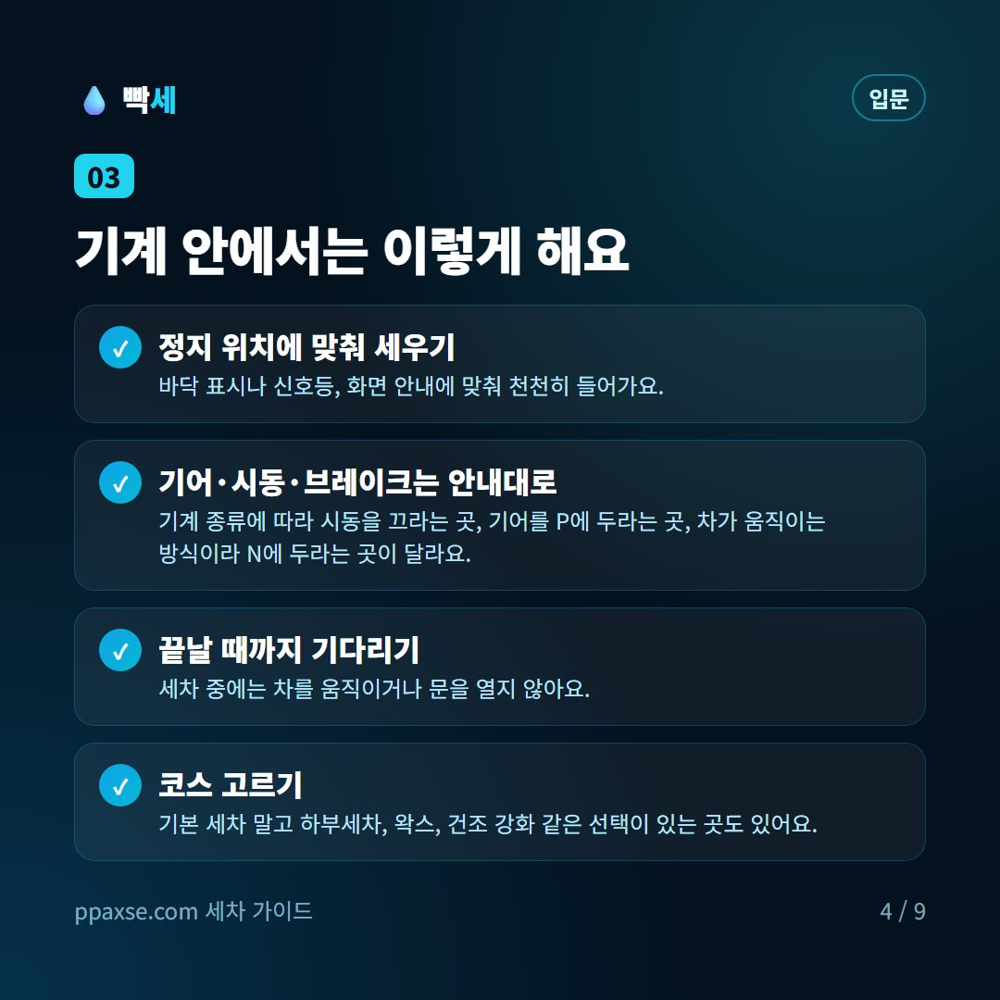
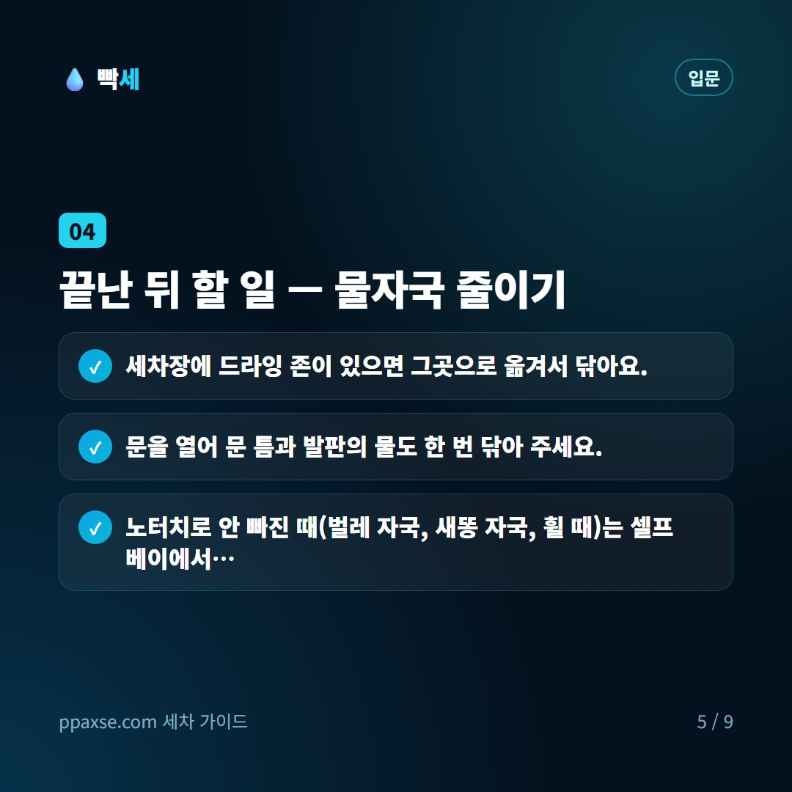
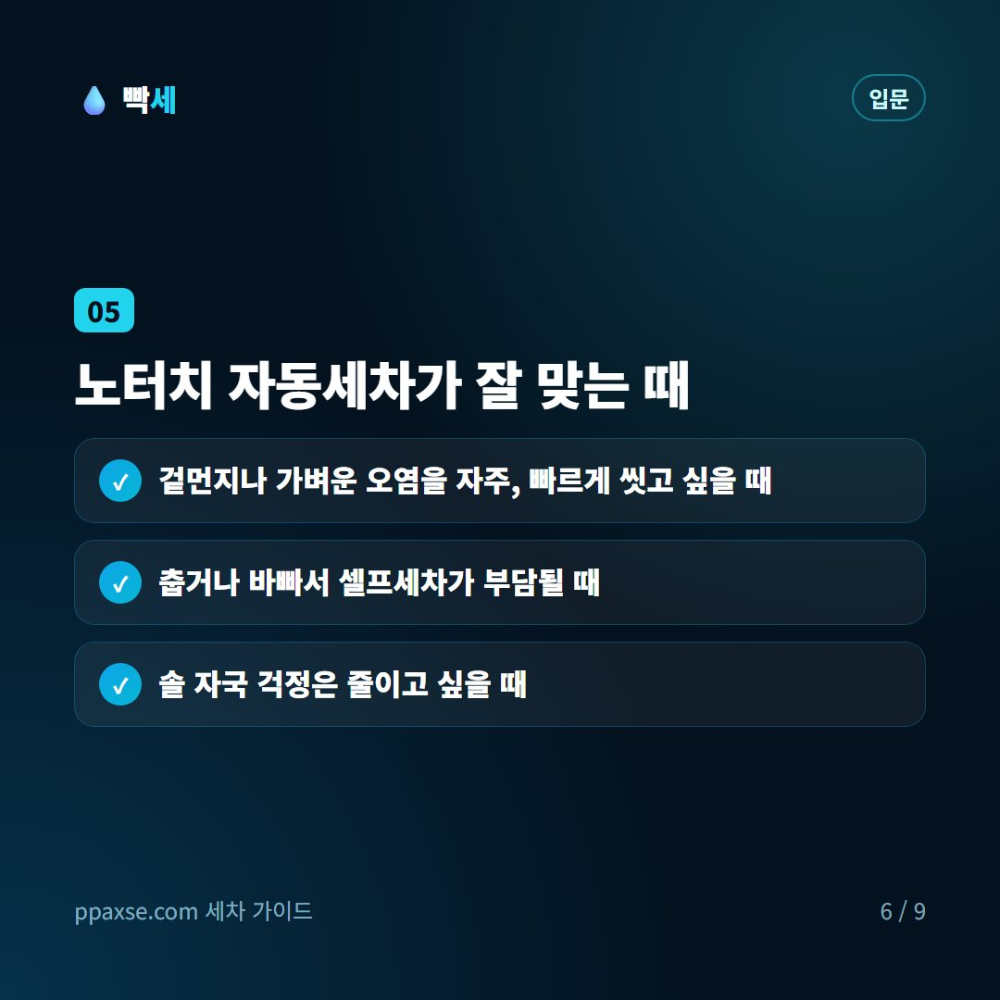

노터치 자동세차 이용법 — 들어가기 전 확인할 것과 끝난 뒤 할 일
요즘 세차장이나 주유소에서 "노터치 자동세차", "노브러쉬 자동세차"라는 안내를 자주 볼 수 있어요. 차를 세워 두기만 하면 기계가 알아서 씻어 주니 편하지만, 처음이면 "그냥 들어가면 되나?" 싶어 망설여지죠. 이 글에서는 들어가기 전에 확인할 것, 기계 안에서 할 일, 끝난 뒤 할 일을 순서대로 정리했어요.

노터치 세차와 셀프세차 중 뭘 고를지 고민이라면 노터치 세차와 셀프세차 차이를 먼저 보셔도 좋아요.
노터치·노브러쉬·브러시 자동세차, 뭐가 다른가요?

- 노터치 = 노브러쉬 — 국내에서는 거의 같은 뜻으로 써요. 솔이나 천이 차에 닿지 않고 고압수와 세제만으로 씻는 방식이에요. 흠집 걱정이 적은 대신, 오래 붙은 때나 진흙은 다 안 빠질 수 있어요.
- 브러시 자동세차 — 주유소에서 흔히 보는, 큰 솔이 돌면서 차를 문지르는 방식이에요. 문질러 주니 때는 잘 빠지는 편이지만, 솔 관리 상태에 따라 미세한 흠집 걱정을 하는 분들도 있어요.
- 천(소프트) 방식 — 솔 대신 부드러운 천 띠나 폼 롤러가 닿는 기계도 있어요. 세차장마다 이름을 다르게 붙이기도 해요.
들어가기 전에 확인할 것

자동세차는 기계가 정해진 대로 움직이기 때문에, 들어가기 전 준비가 가장 중요해요. 세차장마다 안내가 조금씩 다르니 현장 안내판과 직원 안내를 먼저 따라 주세요. 많이 챙기는 것들은 이래요.
- 창문·선루프 꼭 닫기 — 조금만 열려 있어도 물이 들어와요.
- 자동 와이퍼 끄기 — 비 감지 와이퍼는 세차 중 물을 비로 알고 움직일 수 있어요. 뒷유리 와이퍼도 꺼 두세요.
- 안테나·부착물 확인 — 뽑거나 접을 수 있는 안테나는 정리해 두고, 루프박스·자전거 캐리어·큰 스포일러처럼 튀어나온 게 있으면 이용할 수 있는지 먼저 확인해요. 차 높이 제한이 있는 기계도 있어요.
- 사이드미러 접기 — 접으라고 안내하는 기계가 많아요.
- 심한 진흙·모래는 미리 — 노터치는 문지르지 않아서 두꺼운 흙은 남기 쉬워요. 진흙이 많이 묻었다면 셀프 베이에서 고압수로 먼저 떨어내는 분들도 있어요.
기계 안에서는 이렇게 해요

- 정지 위치에 맞춰 세우기 — 바닥 표시나 신호등, 화면 안내에 맞춰 천천히 들어가요. 너무 앞이나 뒤에 서면 일부가 덜 씻길 수 있어요.
- 기어·시동·브레이크는 안내대로 — 기계 종류에 따라 시동을 끄라는 곳, 기어를 P에 두라는 곳, 차가 움직이는 방식이라 N에 두라는 곳이 달라요. 꼭 그 세차장 안내를 따라 주세요.
- 끝날 때까지 기다리기 — 세차 중에는 차를 움직이거나 문을 열지 않아요. 바람 건조까지 끝나고 "출차" 안내가 나오면 나가요.
- 코스 고르기 — 기본 세차 말고 하부세차, 왁스, 건조 강화 같은 선택이 있는 곳도 있어요. 겨울철 제설제가 걱정이라면 하부세차가 있는지 확인해 보세요.
끝난 뒤 할 일 — 물자국 줄이기

바람 건조를 해도 사이드미러 밑, 문 손잡이, 트렁크 틈 같은 곳엔 물이 남기 쉬워요. 그대로 마르면 물자국이 생길 수 있어서, 드라잉 타월로 남은 물기만 가볍게 닦아 줘도 결과가 훨씬 깔끔해요.
- 세차장에 드라잉 존이 있으면 그곳으로 옮겨서 닦아요. 기계 앞에 오래 서 있으면 다음 차가 기다려요.
- 문을 열어 문 틈과 발판의 물도 한 번 닦아 주세요.
- 노터치로 안 빠진 때(벌레 자국, 새똥 자국, 휠 때)는 셀프 베이에서 그 부분만 손보는 분들이 많아요.
겨울이라면 물기가 얼기 전에 닦는 게 더 중요해요. 자세한 요령은 겨울철 셀프세차 방법과 주의점에 정리해 두었어요.
노터치 자동세차가 잘 맞는 때

- 겉먼지나 가벼운 오염을 자주, 빠르게 씻고 싶을 때
- 춥거나 바빠서 셀프세차가 부담될 때
- 솔 자국 걱정은 줄이고 싶을 때
반대로 진흙이 두껍게 묻었거나 코팅·왁스 작업 전처럼 아주 깨끗한 바탕이 필요할 때는 셀프세차가 더 잘 맞을 수 있어요.
내 주변 노터치 자동세차장 찾기
노터치 기계가 있는지, 하부세차나 드라잉 존이 있는지는 세차장마다 달라요. 빡세 지도에서는 세차장 종류(셀프·노터치·자동세차 등)와 시설 정보를 이용자들이 함께 채워가고 있어요. 지역별 목록은 지역별 세차장 모음에서 볼 수 있어요.
다녀온 곳의 기계가 어땠는지("건조가 약해요", "하부세차가 있어요" 같은 정보)를 한마디로 남겨 주시면, 다음 사람이 세차장을 고를 때 큰 도움이 돼요.
셀프세차·노터치·손세차를 종류별로 골라 보고, 폼건·온수·하부세차 같은 시설 정보도 확인할 수 있어요.
🗺️ 세차장 지도 열기✏️ 자주 가는 세차장에 한마디 남기기🎁 한마디를 남기면 가입 없이도 매주 기프티콘 추첨에 응모돼요.